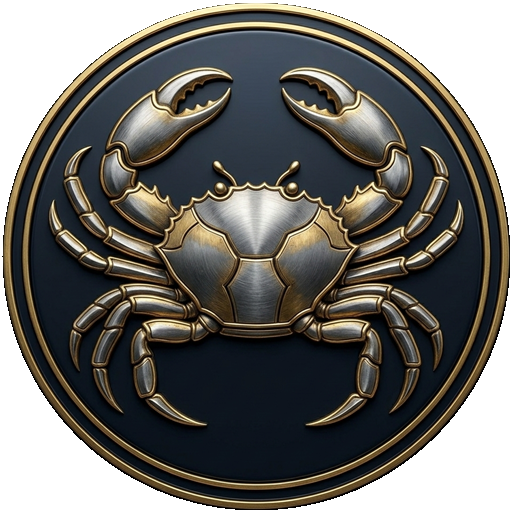

LE CLAN DU CRABE
Gardiens militaires des frontières méridionales de Rokugan, les samouraïs du Clan du Crabe tiennent le Mur Kaiu face aux légions démoniaques et corrompues de l'Outremonde. Fondé par le Kami Hida, le clan a pour mandat impérial la survie brute de l'Empire, subordonnant l'étiquette et le raffinement de cour à l'efficacité guerrière, à la maîtrise des armes lourdes, au génie de siège et à la résistance spirituelle face à la Souillure.

1. Origine Sacrée & Mandat Impérial
Lors de la chute des Kami, Hida s'illustra par sa stature et son endurance hors du commun. À la suite du Premier Tournoi où Hantei monta sur le trône, Hida reçut la charge imprescriptible de défendre la frontière sud contre leur frère déchu, Fu Leng, confiné dans les Terres de l'Outremonde.
Au VIIIe siècle, sous l'égide de l'ingénieur en chef Kaiu Sukune et par décret impérial, le clan acheva l'édification du Mur des Bâtisseurs (Mur Kaiu) : une ligne fortifiée de plus de cent lieues combinant blocs cyclopéens, pièges balistiques, fosses d'huile naphte et enchantements sacrés de Terre pour repousser les assauts ininterrompus de Jigoku.
Bleu nuit profond, gris ardoise et fer brossé. Armures lourdes renforcées, doigtiers de jade protecteurs contre la Souillure et peaux épaisses pour les gardes d'hiver.
Histoire clanique : The Great Clans, p. 11-19. Architecture militaire : Emerald Empire, p. 138-142. Traité de la Terre : The Book of Earth, p. 32-58.
Profil de Création PJ
- Anneau Majeur : Terre (Endurance & Volonté)
- Kami Fondateur : Hida
- Forteresse Principale : Shiro Hida
- Élément de Siège : Le Mur Kaiu
- Armes de Prédilection : Tetsubo, Dai Tsuchi, Yari
- Livre de Base 4e : Pages 105-108
2. Lignées du Clan & Familles Vassales (Familles Bushi en tête)
Livre de Base 4e Édition, p. 105-106 ; The Great Clans, p. 20-27, 284-285, 289.Famille Hida
+1 ForceDescendants du Kami Hida, parmi les samouraïs les plus imposants et les plus puissants de tout l'Empire. Leur incombe la charge de défendre Rokugan ; ce sont à la fois des guerriers redoutables et des tacticiens défensifs accomplis, prompts à mépriser l'étiquette des autres clans.
🌿 Familles Vassales (2 : Kakeguchi, Moshibaru) ▾
- Kakeguchi : Descendant d'un compagnon de Hida qui veilla sans attendre de récompense ; fervents soutiens des Hida, souvent officiers militaires, gardes-frontières ou magistrats. (Great Clans p. 284)
- Moshibaru : Née après le premier Hiver des Vingt Gobelins instauré au IVe siècle par Hida Ichido ; cette lignée accueille les rônin ayant gagné leur admission au sein du Clan du Crabe. (Great Clans p. 285)
Famille Hiruma
+1 AgilitéSilencieux et mortels, les Hiruma sont les éclaireurs et yojimbo du Crabe. Aussi agiles et rapides que les Hida sont puissants, ils assument la tâche périlleuse de patrouiller dans l'Outremonde pour repérer les forces ennemies avant qu'elles n'atteignent le Mur.
🌿 Familles Vassales (2 : Endo, Raikuto) ▾
- Endo : Fondée par le jeune ingénieur Kaiu Endo qui rebâtit Shiro Hiruma en deux ans après sa reconquête ; vouée au maintien et à la défense des terres Hiruma face à l'Outremonde. (Great Clans p. 289)
- Raikuto : Issus de la noble diplomate Hiruma Saitsune ; servent en cour aux côtés des Yasuki, auxquels ils jurèrent temporairement fidélité jusqu'à la reconquête des terres Hiruma. (Great Clans p. 285)
Famille Kaiu
+1 IntelligenceIngénieurs de siège, maîtres forgerons et architectes responsables des prouesses techniques les plus durables de l'Empire, à commencer par l'entretien et l'armement du Grand Mur des Bâtisseurs (Mur Kaiu).
🌿 Familles Vassales (2 : Fundai, Maisuna) ▾
- Fundai : Fondée au VIe siècle ; maîtres charpentiers navals des ports du Crabe et concepteurs des célèbres navires-tortues cuirassés (kotetsukan). (Great Clans p. 284)
- Maisuna : Tailleurs de pierre et ingénieurs légendaires qui étendirent les fortifications du Mur Kaiu après la Bataille de la Vague Déferlante et en assurent l'entretien séculaire. (Great Clans p. 284)
Famille Toritaka
+1 PerceptionAncien Clan Mineur du Faucon absorbé par le Crabe au XIIe siècle pour empêcher une menace surnaturelle de grandir en son sein. Originaires de terres hantées, les Toritaka possèdent une connaissance inégalée des fantômes (yorei), gaki et esprits de toutes sortes.
Famille Kuni
+1 IntelligenceSinistres d'apparence et d'actes, les Kuni comptent parmi les shugenja les plus redoutés de l'Empire. Convaincus qu'on ne peut vaincre l'Outremonde sans le comprendre, ils étudient des secrets qui briseraient l'esprit d'hommes ordinaires.
🌿 Familles Vassales (2 : Meishozo, Ugawari) ▾
- Meishozo : Créée au VIIIe siècle autour des techniques de maquillage et d'infiltration ; officiellement garants des peintures rituelles Kuni, ils infiltrent secrètement les cultes occultes. (Great Clans p. 284)
- Ugawari : Petite lignée marginale née au IVe siècle, spécialisée dans la capture et la détention de créatures de l'Outremonde vivantes pour les dissections et études des Kuni. (Great Clans p. 285)
Famille Yasuki
+1 IntuitionAutrefois famille de la Grue ayant rallié le Crabe au IIIe siècle (déclenchant la guerre Yasuki). Marchands et courtisans d'esprit pragmatique et retors, ils recherchent chaque avantage financier et logistique pour ravitailler le Clan.
🌿 Familles Vassales (1 : Kano) ▾
- Kano : Artisans héritiers du passé Grue ayant suivi les Yasuki lors de la Première Guerre Yasuki ; rares créateurs d'art pacifique au sein du Crabe, s'alliant parfois aux forges Kaiu. (Great Clans p. 284)
3. Doctrine Martiale & Pratique du Bushido
Références : Livre de Règles 4e Édition, p. 48-49, 92 ; Emerald Empire, p. 30-33.Le Courage (Yū) & Survie
Pour le Crabe, la bravoure ne réside pas dans une mort esthétique lors d'un duel courtois, mais dans le devoir impérieux de survivre pour maintenir le rempart opérationnel le lendemain. Le sacrifice n'est toléré que s'il achète un avantage tactique décisif pour l'escouade.
Rapport à la Courtoisie (Rei)
Les artifices de la cour impériale sont perçus comme un luxe dangereux par des soldats confrontés quotidiennement à des menaces existentielles. Le parler Crabe est direct, sans circonlocution, ce qui engendre de fréquentes frictions avec les courtisans de la Grue ou du Scorpion.
Perception des Autres Clans
Le Lion est respecté pour sa pugnacité militaire, bien que son sens rigide de l'honneur soit jugé inadapté à l'Outremonde. Le Dragon est tenu pour un allié de confiance. La Grue et le Phénix sont jugés complaisants, profitant de la sécurité garantie par le sang versé au sud.
4. Écoles de Base Officielles (Rangs 1 à 5)
Core pp. 106-108, 219 ; Great Clans pp. 39-40 ; Emerald Empire p. 247 ; Imperial Histories I p. 147.Bénéfice : +1 Constitution • Honneur : 3.5
Compétences : Athlétisme, Défense, Armes Lourdes (Tetsubo), Intimidation, Kenjutsu, Connaissance : Outremonde, une compétence Bugei au choix.
Équipement : Armure légère ou lourde, vêtements robustes, Daisho, Arme Lourde ou Arme d'Hast, nécessaire de voyage, 3 koku.
📜 Techniques d'École (Rangs 1 à 5) ▾
- Rang 1 — La Voie du Crabe : Ignorez les malus de ND liés au port d'une Armure Lourde sur toutes les compétences sauf Discrétion. +1g0 au total des jets de dégâts avec une Arme Lourde.
- Rang 2 — La Montagne ne Bouge Pas : Gagnez une Réduction égale à votre Anneau de Terre.
- Rang 3 — Deux Pinces, Un Esprit : Attaque par Action Simple au lieu d'Action Complexe avec les Armes Lourdes ou armes à mot-clé Samouraï.
- Rang 4 — Coup Dévastateur : 1/rencontre avec une Arme Lourde, réduisez la Réduction de l'ennemi de 4 pour cette attaque ; si elle réussit, infligez l'état Hébété (Dazed ; récupération : jet d'Anneau de Terre durant la phase de Réactions contre ND = jet de dégâts, -5 par échec).
- Rang 5 — La Montagne ne Tombe Pas : Dépensez 1 Vide en phase de Réactions : durant votre prochain Tour et jusqu'à la prochaine phase de Réactions, agissez comme Indemne et ignorez Hébété, Fatigué et Sonné.
Bénéfice : +1 Volonté • Honneur : 4.5
Compétences : Athlétisme, Chasse, Kenjutsu (Katana), Kyujutsu, Connaissance : Outremonde, Discrétion, une compétence au choix.
Équipement : Armure d'ashigaru ou légère, vêtements robustes, Daisho, Arc avec 20 flèches ou Couteau, nécessaire de voyage, 3 koku.
📜 Techniques d'École (Rangs 1 à 5) ▾
- Rang 1 — La Flamme de la Torche Vacille : +1g0 aux jets d'attaque en posture d'Attaque. Doublez la durée des rations de nourriture, eau et jade pour un nombre de personnes égal à votre rang de Chasse.
- Rang 2 — La Petite Leçon du Loup : En posture d'Attaque, ajoutez +5 à votre ND d'Armure à chaque touche en mêlée (cumulable jusqu'à votre Rang d'École pour la durée de l'escarmouche).
- Rang 3 — Ailes du Colibri : 1/Round quand vous êtes ciblé, ajoutez 2 × Rang d'École à votre ND d'Armure contre cette attaque (cumulable avec tout autre bonus).
- Rang 4 — Le Requin Sent le Sang : Attaque par Action Simple avec toute arme portant le mot-clé Samouraï.
- Rang 5 — La Lumière du Jour ne Gaspille Aucun Mouvement : Reportez tout excédent de Blessures au-delà du nécessaire pour tuer une cible sur la prochaine cible touchée (pas deux attaques de suite ; limité à l'escarmouche).
Bénéfice : +1 Force • Honneur : 5.5 • Compétences : Dressage (Faucons), Chasse 2, Kenjutsu, Connaissance : Royaumes Spirituels, Lances, une compétence.
📜 Détails & Techniques d'École ▾
R1 : +1g0 aux jets de Perception et +1g0 dégâts contre les créatures d'autres Royaumes Spirituels. • R2 : Détection de ces créatures par Perception ND Air × 5. • R3 : Attaque Action Simple avec Lance ou arme Samouraï. • R4 : 1 Vide annule les malus d'obscurité/aveuglement pour 2 Rounds. • R5 : Ignore 5 de Réduction (et -10 contre esprits pour 1 Vide pendant 1 Round).
Bénéfice : +1 Intelligence • Honneur : 4.5 • Compétences : Art de la Guerre, Artisanat : Armurerie, Artisanat : Forge d'Armes, Défense, Ingénierie (1 sp.), Connaissance : Architecture, Éventails de Guerre.
📜 Détails & Techniques d'École ▾
R1 : +1g0 aux jets de Compétences d'École ; Vide accorde +2g2 (au lieu de +1g1). • R2 : Ingénierie ND 25 ajoute Rang × 100 Blessures aux grands édifices ; relance les dés de siège < Rang. • R3 : Double temps/coût pour ajouter Rang en Réduction et ⌈Rang/2⌉ au ND d'une armure forgée. • R4 : ±⌈Rang/2⌉ en Bataille de Masse ; Action Simple avec katana, dai-tsuchi ou éventail. • R5 : Confère en permanence +1g0 att. ou +0g1 dég. à une arme forgée (ou rend un katana Incassable en dépensant tout son Vide).
Hida Pragmatist (Kobo Ichi-Kai, EE p. 247) : +1 Agilité • H 2.5 • Jiujutsu (Armes Improvisées) 2. R1 : +1g0 vs Intimidation/Peur ; +1g0 att./dég. à mains nues/armes improvisées (garde les dés les plus élevés). R2 : Attaque Supplémentaire pour 3 Aug. R3 : Action Simple mains nues/improvisées/Samouraï. R4 : Riposte contre attaque ennemie avec sa propre arme. R5 : 1 Vide = Action Complexe ignorant malus de Blessures et +3g1 dégâts.
📜 Détails & Techniques d'École ▾
Hiruma Scout School (IH1 p. 147) : +1 Réflexes • H 4.5 • Ajoute Discrétion à l'Initiative (R1), court en Défense Totale (R2), invisibilité immobile contre 1 Vide (R3), Action Simple armes Samouraï/Couteau/Arc ou vs Outremonde (R4), Augmentations illimitées et -10 Réduction sur cible surprise (R5).
Bénéfice : +1 Volonté • Honneur : 2.5 • Affinité/Déficience : Terre / Air.
Compétences : Calligraphie (Chiffre), Défense, Connaissance : Outremonde 2, Connaissance : Théologie, Art de la Magie, une compétence d'arme.
Sorts : Sens, Communion, Convocation, 3 Terre, 2 Feu, 1 Eau.
Équipement : Robes, Wakizashi, Couteau, Sacoche à parchemins, nécessaire de voyage, 3 koku.
📜 Détails & Techniques d'École ▾
Technique — Regard dans l'Ombre : +1g0 à tous vos jets d'Incantation contre les créatures non-humaines. Tout sort infligeant des dégâts cause +1g1 supplémentaires aux cibles portant la Souillure de l'Outremonde. Augmentation Gratuite sur tout sort portant le mot-clé Jade.
Bénéfice : +1 Perception • Honneur : 2.5
Compétences : Commerce (Évaluation), Courtisan, Défense, Étiquette, Intimidation, Sincérité (Tromperie), une compétence Marchande au choix.
Équipement : Vêtements traditionnels, Wakizashi, Couteau, nécessaire de calligraphie, nécessaire de voyage, 5 koku.
📜 Techniques d'École (Rangs 1 à 5) ▾
- Rang 1 — La Voie de la Carpe : Augmentation Gratuite en Commerce ; aucune perte d'Honneur ou de Gloire à l'utiliser publiquement. Jet Opposé Commerce/Perception vs Étiquette/Intuition pour découvrir un bien ou service désiré par votre interlocuteur.
- Rang 2 — Fais Comme Nous Disons : Rang d'École/session, relancez un jet raté de Sincérité ou d'Intimidation (gardez le 2e).
- Rang 3 — Trésors de la Carpe : Lancez Commerce/Intuition ND 20 pour trouver un objet rare ou utile pour autrui (Augmentations pour plus rareté ; pas pour votre usage personnel).
- Rang 4 — Ruses de la Carpe : Le ND de tout Jet Social visant à vous mentir ou tromper augmente de 5 × Rang d'École.
- Rang 5 — Ce qui est à Toi est à Moi : Si vous procurez un bien matériel dont quelqu'un a besoin, gagnez +5g0 à vos Jets Sociaux Opposés contre lui pendant 24 heures.
Bénéfice : +1 Volonté • Honneur : 5.5 • Compétences : Enquête, Jiujutsu, Kenjutsu, Connaissance : Outremonde, Connaissance : Maho, Méditation, une compétence.
📜 Détails & Techniques d'École ▾
R1 : Action Complexe avec pendentif de jade (Enquête/Intuition vs Sincérité/Volonté, +1g0/Rang complet de Souillure) pour détecter la Souillure ; +1g1 résistance Souillure et attaques contre créatures/Souillés. • R2 : Action Gratuite Connaissance : Outremonde/Intelligence ND 20 pour forces/faiblesses (1/Aug.). • R3 : Attaque mêlée Action Simple vs Outremonde/Souillé. • R4 : +3g0 aux R1/R2 ; +1 Kiho. • R5 : +4g1 attaque et dégâts vs Outremonde/Souillé.
5. Écoles Avancées & Voies Alternatives Officielles
Texte exact des prérequis, rangs remplacés et effets mécaniques (Core p. 247, 251 ; Great Clans ; Air/Earth/Fire ; Strongholds ; IH2).⚖️ Règles & Effets détaillés ▾
Rang 1 (The Flames of Purity) : Les créatures possédant la Souillure de l'Outremonde ne peuvent pas faire exploser leurs 10 sur les jets d'attaque ou de dégâts contre vous. • Rang 2 (Hida's Strength) : Vous gagnez une Réduction de 8 même sans porter d'armure (cumulable avec toute armure ou Technique). • Rang 3 (The Crab Are the Wall) : 1/Round, vous pouvez annuler immédiatement un Effet Conditionnel qui vous affecte (sauf Monté ou Saisi).
⚖️ Règles & Effets détaillés ▾
1/escarmouche (Phase de Réactions) pendant 2 × Terre Rounds : pas de posture Centre/Défense/Défense Totale ni compétences non-Bugei, mais ignore tous les malus de Blessures, gagne +2g1 attaque et dégâts, et continue de se battre mort jusqu'à atteindre 2 × seuil fatal (ou fin de rage).
⚖️ Règles & Effets détaillés ▾
Crab Defender (Intuition 3, Agi 3, Iaijutsu 4) : +Terre × 3 Réduction durant l'étape Frappe d'un duel iaijutsu. • Falcon's Strike (Kyujutsu [Yumi] 3) : Utilise Perception au lieu de Réflexes à l'attaque et au lieu de la Force du Yumi aux dégâts.
⚖️ Règles & Effets détaillés ▾
Hiruma Snipers (Kyujutsu 5, Réf 4) : Tir au yumi en Action Simple ; ignore toute Réduction naturelle/armure et moitié de la magique. • Hiruma Slayers (Armes Lourdes [Masakari] 5) : Pas de malus en main secondaire au masakari ; Action Simple ; +3g0 dégâts en Assaut (ou Attaque vs Outremonde/Souillé).
⚖️ Règles & Effets détaillés ▾
Sumai Wrestler (Hida/Yasuki 2, Jiujutsu [Sumai] 4) : Perd Petit et gagne Grand gratuitement ; +1g0 (+2g0 si Grand) pour contrôler un Grapple et +1g1 dégâts. • Knife-Fighters (Hida/Pragmatist 4 ou Hiruma 3, Couteaux 3) : Main libre + tanto = +3g1 dégâts et ignore l'armure (5 pts de Réduction naturelle).
⚖️ Règles & Effets détaillés ▾
Kaiu Siegemaster (Kaiu 5, Art de la Guerre 5, Ingénierie 5) : ±Rang d'École entier en Bataille de Masse lors d'un siège ; +2g0 en défense au tir de siège et +50% Réduction aux structures. • Kuni Crystal Master (Kuni 4, Terre 5, Art Magie 5, Éléments [Cristal] 5) : +1 Action Complexe + 1 Vide infuse un sort de Feu/Terre de +1g1 dégâts et du mot-clé Cristal.
⚖️ Règles & Effets détaillés ▾
Extortionist (Yasuki 4) : Intimidation/Volonté vs Étiquette/Volonté inflige Obligation ou Chantage (3 pts). • Enforcer (Yasuki/Pragmatist 2) : Intimidation opposée confère +1g0 (+1g0/Aug.) au 1er Round. • Severed Hand (Bushi Crabe 4) : Utilise Volonté pour résister aux Jets Sociaux. • Hiruma Yojimbo (Hiruma 3) : Action Gratuite Garde après une mêlée réussie.
⚖️ Règles & Effets détaillés ▾
Kaiu Shipmasters (Kaiu 3 / Siegemaster 1, Art Guerre 4, Navigation 5) : Maîtrise tactique navale des navires-tortues cuirassés. • Order of the Stone Crab (Tout Bushi 4) : Garde du corps stoïque d'Hida Tsuneo.
⚖️ Règles & Effets détaillés ▾
1h et 1 emplacement de Terre créent un cercle de confinement (Rang × 5 pieds²) contre les oni : un oni piégé doit réussir un jet de Volonté vs votre Jet d'Incantation pour en sortir (tant qu'il est actif, vous avez 1 emplacement de Terre en moins par jour).
⚖️ Règles & Effets détaillés ▾
Enquête (Obs.)/Per ND 20 (+2 Aug. pour identifier le type) détecte les esprits dangereux. Action Complexe + 1 emplacement : Jet Opposé de Volonté (+2g2 avec sceau d'exorcisme) pour expulser un esprit possesseur pour 24h min.
Aucune école avancée ou voie alternative spécifique pour ce filtre.